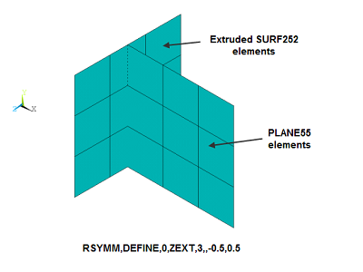
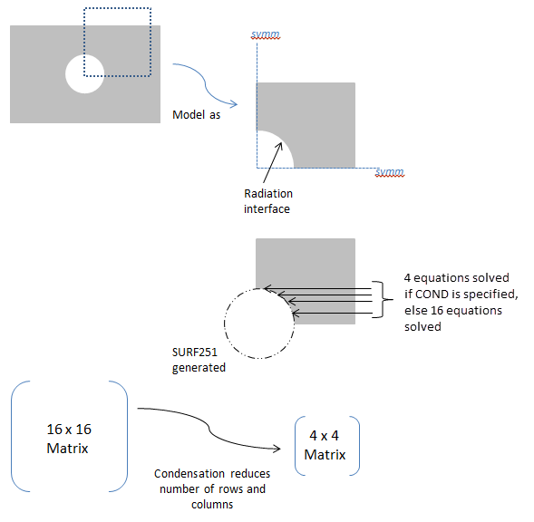

ansys.mapdl.core.Mapdl.rsymm#
- Mapdl.rsymm(option='', cs='', axis='', nsect='', condvalue='', sval='', eval_='', **kwargs)#
Defines symmetry, rotation, or extrusion parameters for the radiosity method.
Mechanical APDL Command: RSYMM
- Parameters:
- option
str Command options:
CLEAR- Deletes all symmetry/extrusion definitions. Other command options are ignored.DEFINE- Defines the symmetry/extrusion definition (default).STAT- Shows the status/listing. Other command options are ignored.COND- Activates or deactivates condensation for all defined radiation symmetries/extrusions, which reduces the size of the radiosity equation system (see cmd_rsymm_fig1 ). Default is off.Condensation via rsymm,COND is not recommended as the most efficient solution for symmetric models. To best leverage model symmetry to improve efficiency, use view factor condensation via the vfco command, which condenses the view factor matrix in addition to simplifying the radiosity equations (see Considerations for View Factor Condensation for details).
- cs
str Local coordinate system ( \(equation not available\) 11) as defined using the local or cs commands or the global coordinate system (0). For planar reflection, the coordinate system origin must be on the plane of symmetry (POS) and one of its axes must be normal to the POS. For cyclic reflection, the coordinate system origin must be coincident with the center of rotation (COR). Only Cartesian systems are valid.
- axis
str Axis label of the coordinate system (
CS) that is normal to the POS for planar reflection, or label to indicate the type of extrusion. For cyclic reflection, this field must be blank, and it is assumed that the Z axis is aligned with the axis of rotation.X, Y, or Z- Planar reflection. For 2D model planar reflections, valid labels are X or Y. For 3D model planar reflections, valid labels are X, Y, or Z.ZEXT- Linear extrusion of a line element in the X-Y plane, in the Z direction, to create 4-nodedSURF252elements.NSECTindicates how many elements will be created.SVALis the starting Z value, andEVALis the ending Z value.CSmust be 0.CEXT- Circumferential extrusion (theta direction) around the global Y-axis. A 2-noded line element in the X-Y plane is extruded to create 4-nodedSURF252elements.NSECTindicates how many elements will be created.SVALis the starting angle, and EVAL is the ending angle (in degrees). The angles are with respect to the global X-axis.CSmust be 0.(blank)- Cyclic reflection.
- nsect
str Number of cyclic reflections to be done, or number of elements in the extrusion direction.
For planar reflection, this field must be 0 or blank.
For cyclic reflection, this field must be ≥ 1 or ≤ -1. Use a positive value if you want the sector angle to be computed automatically. Use a negative value if you want the sector angle to be computed manually. See Notes Notes for details.
- condvalue
str Condensation key. Valid only when
Option= COND.ON- Activates condensation in the radiosity solver for all defined radiation symmetries/extrusions.OFF- Deactivates condensation in the radiosity solver for all defined radiation symmetries/extrusions (default).
- sval
str Starting and ending Z values (if
Axis= ZEXT) or angle values (ifAxis= CEXT) used for the extrusion. Not used for planar or cyclic reflection.- eval_
str Starting and ending Z values (if
Axis= ZEXT) or angle values (ifAxis= CEXT) used for the extrusion. Not used for planar or cyclic reflection.
- option
Notes
The rsymm command is used to define the plane of symmetry (POS) for planar reflection or the center of rotation (COR) for cyclic reflection. It can also be used to set parameters for a linear or circumferential extrusion. The input provided on this command is used to generate radiosity surface elements (
SURF251/SURF252) when the rsurf command is issued.The rsymm command must be issued before rsurf, and it may be issued multiple times to have more than one planar/cyclic reflection or extrusion. The rsurf command processes rsymm commands in the order they are issued.
For planar reflection, you must define a local coordinate system ( \(equation not available\) 11) with its origin on the POS. One of its axes must be aligned so that it is normal to the plane. If possible, use the existing global coordinate system (0).
For cyclic reflection, you must define a local coordinate system ( \(equation not available\) 11) with its origin coincident with the COR. Reflections occur about the local Z-axis in the counterclockwise direction. You must align the Z-axis properly. If possible, use the existing global coordinate system (0).
For cyclic reflection,
NSECTis used as follows:\(equation not available\)
\(equation not available\)
where θ:sub:max and θ:sub:min are computed internally based on location of the RDSF (surface-to-surface radiation) flagged surfaces.
See cmd_rsymm_fig2 for an example of
NSECTusage.For linear or circumferential extrusion (
Axis= ZEXT or CEXT), you must ensure that the extruded area matches the area of the underlying element; otherwise, the results may not be correct. For example, in the case ofPLANE55elements with a planar depth = 10, useAxis= ZEXT and setSVALandEVALsuch thatEVAL-SVAL= 10. Likewise, for axisymmetricPLANE55elements, useAxis= CEXT and setSVALandEVALsuch thatEVAL-SVAL= 360. You must also issue v2dopt,1 for the axisymmetric case. See cmd_rsymm_fig3 for extrusion examples.The
Axis= ZEXT and CEXT options are not valid forSHELL131andSHELL132elements.New surface elements generated by the rsymm command inherit the properties of the original elements.
For 2D axisymmetric models, rsymm can be used only for symmetrization in the YR plane. It cannot be used for the theta direction. Use v2dopt in that case.
For 2D axisymmetric YR models, the newly-generated nodes can have only positive X coordinates.
Usage Example: Positive and Negative
NSECTValues This command contains some tables and extra information which can be inspected in the original documentation pointed above.
Usage Example: Extrusions with Axis= ZEXT and CEXT#
Considerations for View Factor Condensation#
View Factor Condensation via the vfco command is the recommended method to improve solution efficiency for models with symmetry, which are defined with the rsymm command.
When the rsymm command is used, it implies that some radiation facets (
SURF251orSURF252) created by the rsurf command will be a reflection of others. By definition, radiation facets with an underlying solid element are independent facets. Dependent facets are copies of the independent facets having the same dimensions but at different locations. The following figures illustrate solid elements (grey) and independent (blue) and dependent (red) facets for models with different types of symmetry. View factor condensation improves efficiency by condensing the view factor matrix to calculate view factors only for independent facets ( ) and simplifying the radiosity equations to solve only for the independent radiosity flux ( Radiosity Equations Simplified for Models with Symmetry Example of a 3D Open Enclosure with Symmetry: Radiation Analysis with Condensed View Factor CalculationIndependent and Dependent Facets in a Model with Planar Symmetry Employing View Factor Condensation
Independent and Dependent Facets in a Model with Cyclic Symmetry Employing View Factor Condensation
Independent and Dependent Facets for a Model Built by Extrusions Employing View Factor Condensation Although it is not the recommended method, the following figure illustrates condensation via rsymm,COND. The efficiency gains by condensation via rsymm,COND are less than those obtained with view factor condensation via the vfco command, which reduces the view factor matrix in addition to simplifying the radiosity equations, as described in and Radiosity Equations Simplified for Models with Symmetry

Usage Example: Option= COND#
Example Usage
2D Radiation Analysis Using the Radiosity Method with Decimation and Symmetry
3D Open Enclosure with Symmetry: Radiation Analysis with Condensed View Factor Calculation